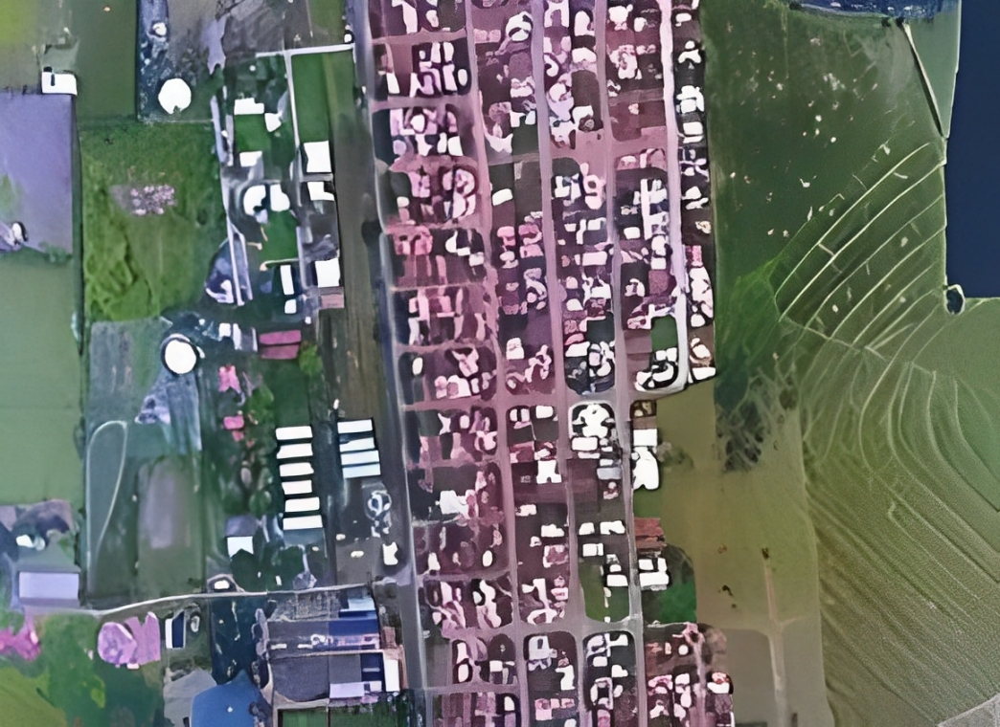
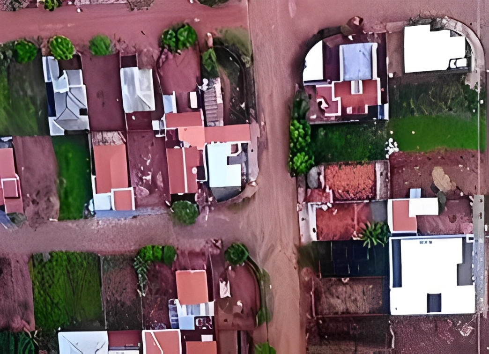
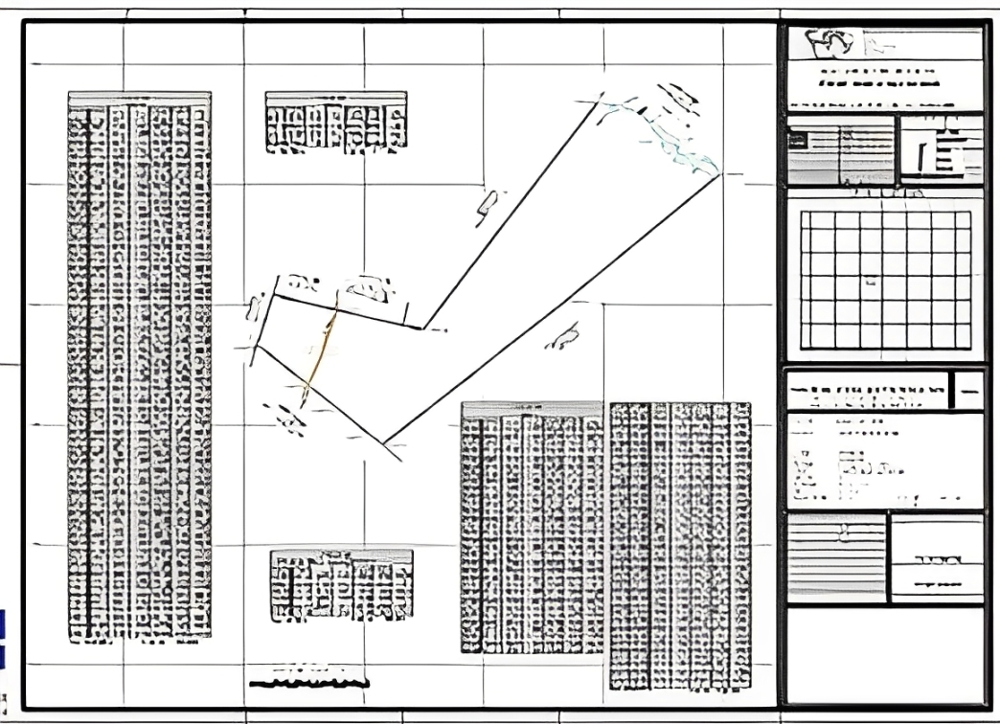
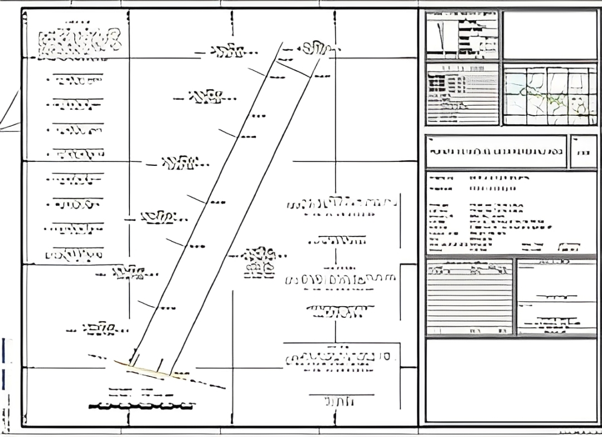

ORTOFOTO
A ortofoto é um produto cartográfico de alta precisão geométrica, comparável a uma carta topográfica, porém com a vantagem de preservar a riqueza de detalhes de uma fotografia aérea. Por meio de processos de correção geométrica e eliminação de distorções causadas pelo relevo e pela perspectiva da câmera, a ortofoto garante precisão métrica, tornando-se uma ferramenta essencial para diversas aplicações.
Graças a essas características, a ortofoto proporciona ao usuário uma experiência intuitiva e eficiente na extração de informações relevantes para suas atividades, sendo amplamente utilizada em levantamentos topográficos, planejamento urbano, monitoramento ambiental, engenharia civil, geoprocessamento, entre outras áreas.
Esse recurso combina a confiabilidade de um mapa com o nível de detalhamento de uma imagem real, permitindo análises precisas e tomadas de decisão estratégicas com maior segurança e assertividade.
 GEORREFERENCIAMENTO
O georreferenciamento é o processo de mapeamento de um imóvel rural que consiste na identificação e referenciamento dos vértices de seu perímetro ao Sistema Geodésico Brasileiro (SGB), garantindo a determinação precisa de sua área e posição geográfica. Esse procedimento é fundamental para a regularização fundiária e registral dos imóveis rurais, atendendo às exigências da legislação vigente, estabelecida pela Lei nº 10.267/2001 e regulamentada pelos Decretos nº 4.449/2002 e nº 5.570/2005. O georreferenciamento assegura maior segurança jurídica, evita sobreposições de áreas e contribui para a organização e gestão do território rural. Além disso, a adoção desse método facilita processos de compra, venda, desmembramento e usucapião de propriedades, garantindo conformidade com as normas do Instituto Nacional de Colonização e Reforma Agrária (INCRA) e proporcionando maior transparência e confiabilidade aos registros imobiliários.

